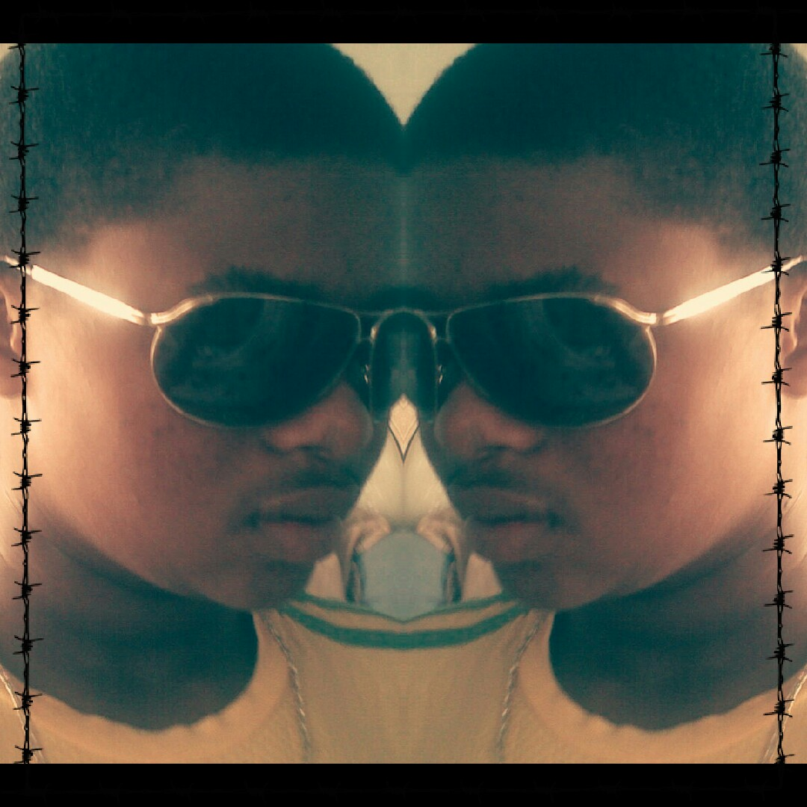

Here is the Game Keeper
Birth name Siphiwo Lindsay Daliwe also known as 2meli (Gamekeeper) was Born 1997 March 7th, he was born and raised in Worcester at Western Cape, in a location called Zweletembva.
"I started my lower grades at a primary called Alfred Stamper Primary School, it was on this same school where i started to realise the i had the potential towards Hip-Hop, i was doing my grade 5 at that time. It was on high school where i started to record my first song with my late crew members(Predetor, Tab-o) in grade 9. I grew up in a location where Hip-hop was based the most, i got influenced by listening to rappers like 50 cent, Lil Wayne, Eminem, Rick Rose and Mzekezekee.t.c crews like G-Unit. It was on 2010 where I decided to introduce myself into the music industry by the help of Mc-Maneza(manezaF8), me and my crew(Young Massive Link) recorded our first single called "we are the Ones" featuring McManeza at a Studio called Site Records, and projects like my ghetto, Never been so inlove, the Dream, bawobaxolele and future to the Past.
. We got our first recording deal at a studio called VMP (Visible Music Productions empowered by Manezaf8) in 2012. After all this the crew started to have some ups and downs which caused it to separate in 2013, and only me and Drastic were left in the crew. I finished my matric on 2014 at a high school called Vusisizwe Senior Secondary School and decided to go further with my studies by applying for College (Boland College Worcester) too study Engineering and Related Design(Welding) in the year 2015. It was on that Same year were i decided that i want to go solo but not withdrawing from the crew and stated from scratch to record my self. The solo decision made me realised many things for an example my inner self towards hip hop music and the skills I have, that is where I decided to work on my first Mixtape called "Game Changer" in the year 2016. The projects on my mixtape are being produced and mastered by different Producers (Maneza,UGB recods, 2meli) and also via Visible Music Productions".